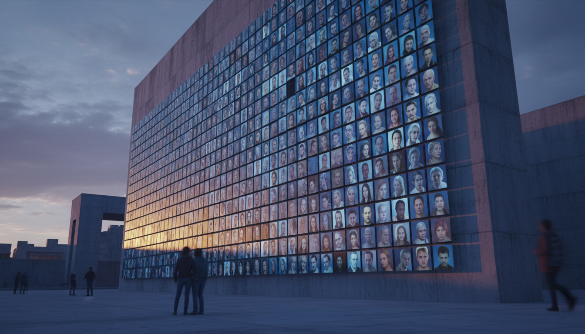
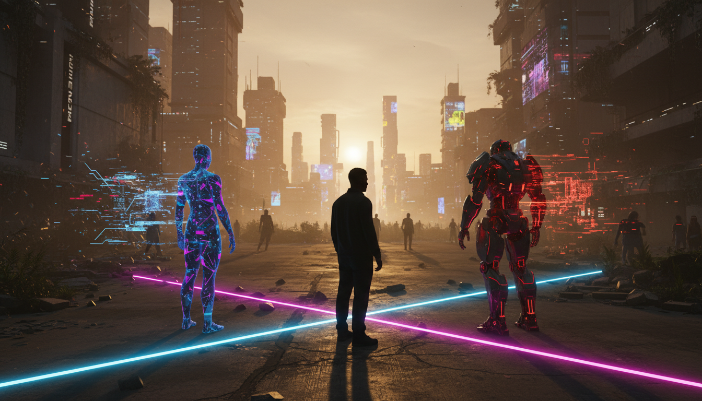
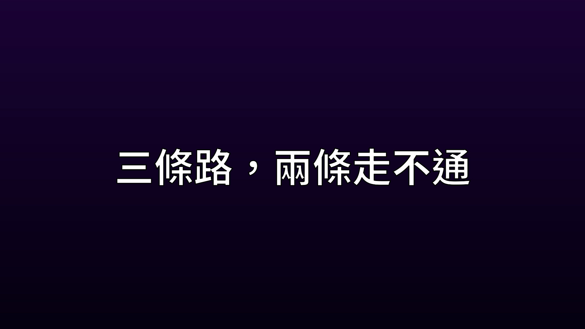
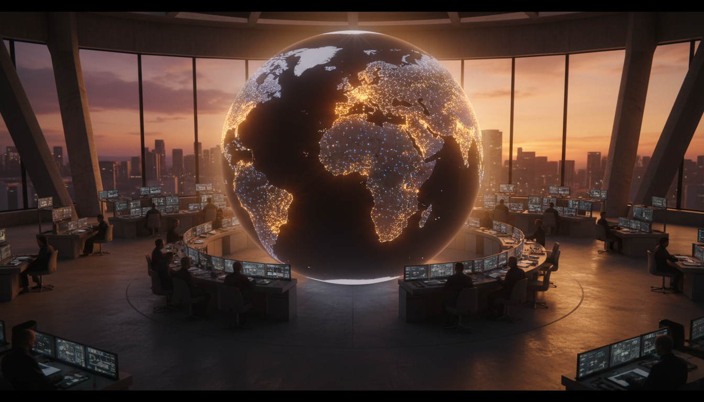
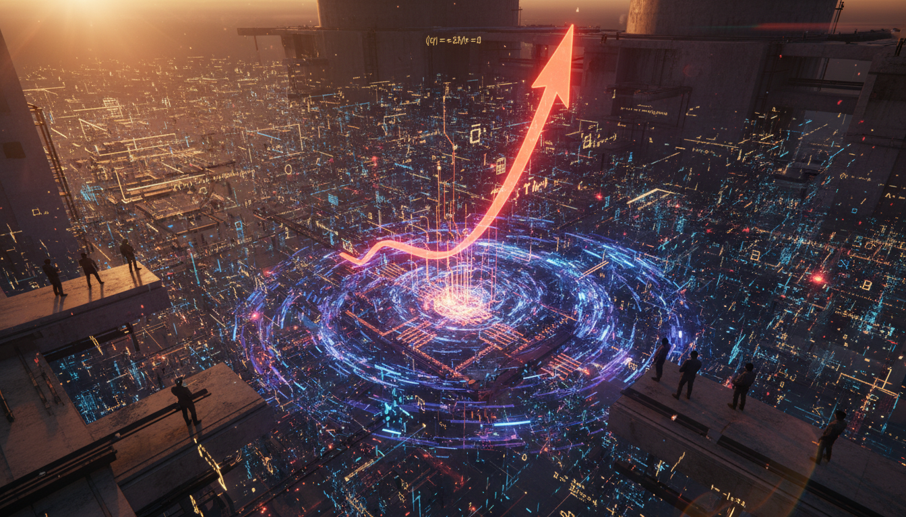
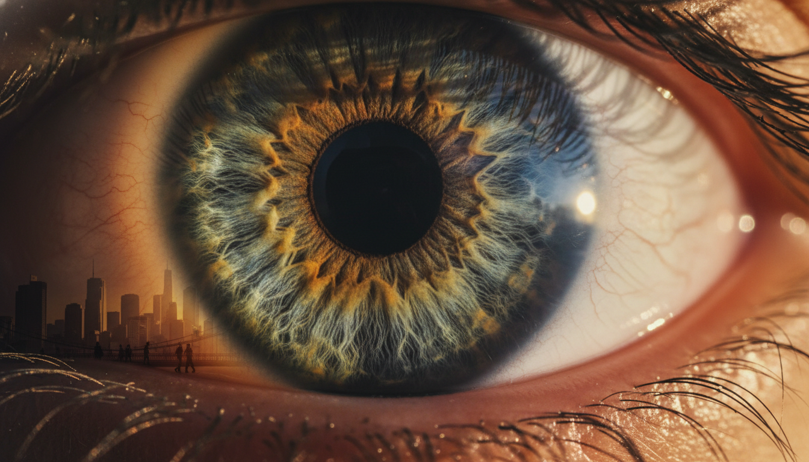
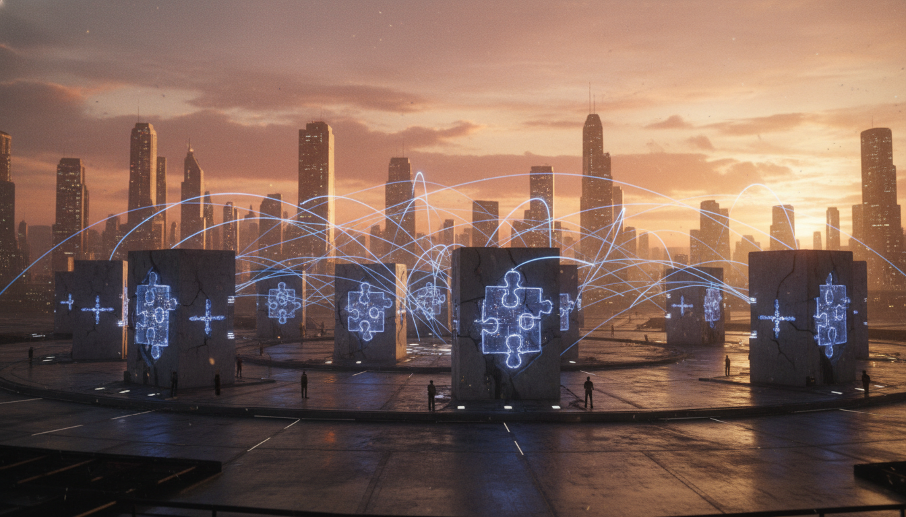
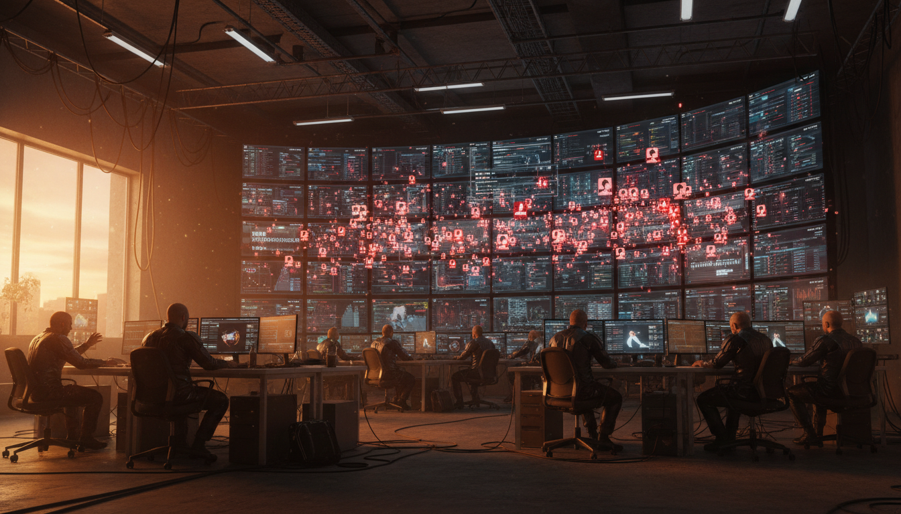
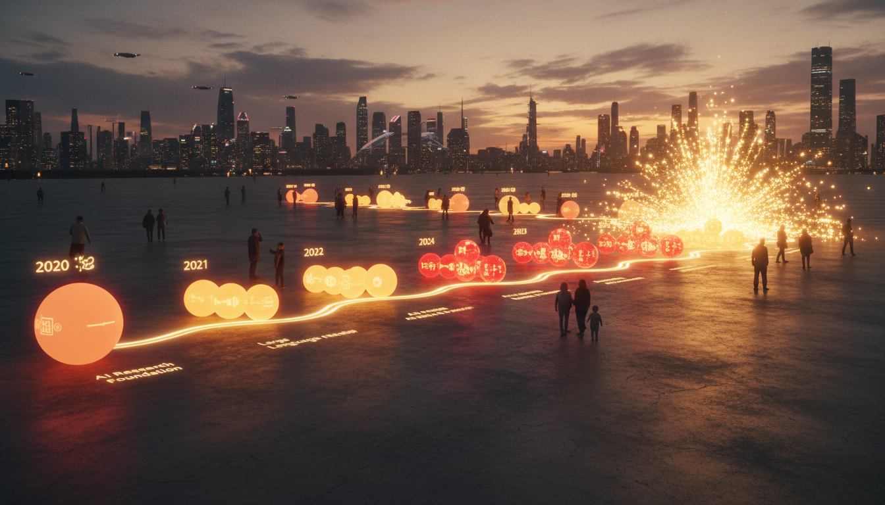

← Stage 索引更新：
94iVoice — world-id-alex-blania 🎬 Stage 審閱中
🎬 Stage 審閱
請確認影片、封面、YouTube 文案，沒問題後告知「確認上傳」。
如需修改腳本 → 告知，重跑 TTS 後重建。如只改文案 → 直接說明。
請確認影片、封面、YouTube 文案，沒問題後告知「確認上傳」。
如需修改腳本 → 告知，重跑 TTS 後重建。如只改文案 → 直接說明。

🖼 YouTube 封面

設計說明
Speaker Alex Blania
大標 你在跟誰 說話？
主文 AI時代的 身份危機
副標 World ID 創辦人深度訪談
時長 12 分鐘精華解析
🖼 章節背景圖
00開場0:00 → 0:59
▶ Twitter上
0:00 ✓ 已生成
深夜手機螢幕上滿是社群通知，一隻手懸在螢幕上方猶豫，冷藍燈光映照臉龐剪影

0:10 ✓ 已生成
數百個機器人帳號的頭像牆，每個頭像都是AI生成的逼真人臉，密密麻麻排列，冷色調
01網路上的三種角色0:59 → 2:00
▶ Alex說
0:59 📌 標題卡
【網路上的三種角色】標題卡

1:01 ✓ 已生成
三個剪影站在數位世界的十字路口，一個是真人、一個半透明代理、一個純機器人，霓虹光線區分三者
1:31 ✓ 已生成
一面巨大的社群媒體動態牆，混雜真人貼文和AI生成貼文，觀看者無法分辨，困惑表情側面剪影
02三條路，兩條走不通2:00 → 3:22
▶ World團隊一開始考慮了 三種方法來證明你是人類

2:00 📌 標題卡
【三條路，兩條走不通】標題卡
2:02 ✓ 已生成
三條岔路在荒漠中分開，黃昏金光照射，中間那條路通往遠方光芒，兩側路逐漸消失在黑暗沙丘中
2:23 ✓ 已生成
AI機器人坐在電腦前，螢幕上同時打開五個不同社群帳號，綠色程式碼光映照鍵盤

2:47 ✓ 已生成
世界地圖上不同國家的身分證系統用光點表示，大部分是暗的，只有少數亮起，全球視角俯瞰
03為什麼是虹膜，不是你的臉3:22 → 4:47
▶ 先說一個你每天在用的東西
3:22 📌 標題卡
【為什麼是虹膜，不是你的臉】標題卡
3:24 ✓ 已生成
Face ID解鎖的抽象示意，一張臉對應一支手機，箭頭表示一對一比對，簡潔科技風格

3:49 ✓ 已生成
數學公式和資訊熵的視覺化，指數曲線急遽上升，背景是密密麻麻的資料節點

4:10 ✓ 已生成
巨大的虹膜特寫，瞳孔纖維紋理清晰可見，光線從側面打入，微觀攝影風格
04Orb：那顆來自未來的銀色球體4:47 → 6:23
▶ 所以World造了一個專用硬體
4:47 📌 標題卡
【Orb：那顆來自未來的銀色球體】標題卡
4:49 ✓ 已生成
World的Orb裝置在明亮展示空間中，銀色球體反射周圍環境，一個人正把臉湊近掃描，未來科技感

5:18 ✓ 已生成
加密資料在多台伺服器之間傳輸的示意圖，每台伺服器只持有一小塊拼圖，藍色光束連接
5:50 ✓ 已生成
手機螢幕上顯示World ID驗證成功的介面，綠色勾勾，背景是模糊的咖啡廳日常場景
05深度造假時代，誰是真的6:23 → 7:48
▶ 你可能覺得
6:23 📌 標題卡
【深度造假時代，誰是真的】標題卡
6:25 ✓ 已生成
視訊會議畫面中，一半是真人，一半是深度造假的影像，兩者幾乎無法區分，分割線微微閃爍
6:49 ✓ 已生成
高級會議室裡的大螢幕視訊通話，對面的人臉部微微扭曲透露出深度造假的痕跡，緊張氛圍

7:14 ✓ 已生成
社群媒體平台的後台監控室，牆上巨型螢幕顯示數百萬筆帳號活動，紅色標記不斷增加
06民主的基礎正在被動搖7:48 → 9:03
▶ Alex提到了一件讓人不安的事
7:48 📌 標題卡
【民主的基礎正在被動搖】標題卡
7:50 ✓ 已生成
美國郵寄選票的特寫，信封堆疊在桌上，背景是國旗和投票箱，嚴肅冷色調
8:16 ✓ 已生成
國會投票廳的莊嚴空間，投票機器排列整齊，空蕩蕩的座位，冷藍燈光
07六年前的賭注9:03 → 10:12
▶ 這家公司不是最近才成立的
9:03 📌 標題卡
【六年前的賭注】標題卡
9:05 ✓ 已生成
早期新創辦公室，白板上畫滿架構圖，一個年輕創業者背對鏡頭看著白板思考，溫暖昏黃燈光

9:25 ✓ 已生成
時間軸視覺化，從2020年到2026年，每個年份標記一個AI里程碑，節點越來越密集越來越亮
08五萬顆球，怎麼鋪到全世界10:12 → 11:26
▶ World目前有一千八 百萬人完成了Orb驗證
10:12 📌 標題卡
【五萬顆球，怎麼鋪到全世界】標題卡
10:14 ✓ 已生成
工廠生產線上排列整齊的Orb裝置，銀色球體反射燈光，工人在背景中忙碌，工業感場景
10:37 ✓ 已生成
摩托車騎士載著一顆銀色Orb穿越城市街道，背景是紐約天際線，黃昏光線
09結語11:26 → 12:14
▶ Alex說了一句話
11:26 📌 標題卡
【結語】標題卡
11:28 ✓ 已生成
清晨的城市天際線，陽光穿透薄霧照射高樓，一個人站在天台遠眺，溫暖金光，開闊構圖
🎬 Stage 影片
✍️ 中文腳本
載入中...
🔊 TTS 發音稿
載入中...
💬 SRT 字幕預覽
載入中...
{kind=link}